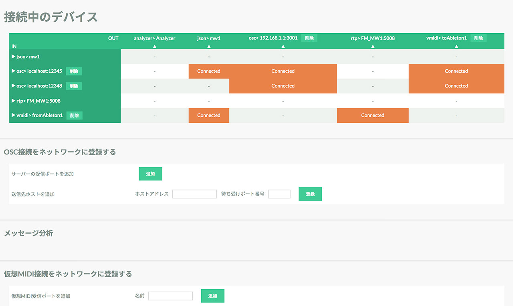

デバイスの接続
Creators' Hubのインターフェースでは入力と出力を結線します。 それにより、MIDI, OSC, WebSocket上のJSONが相互に自動変換され、それぞれに適したフォーマットで出力されます。
マトリクス上のタテ列が入力, ヨコ列が出力です。その交点をクリックするとConnectと表示されINからOUTに信号が流れます。
MIDIデバイスの接続
MIDIデバイスを接続するとIN（タテ列）, OUT（ヨコ列）に自動でリストアップされます。
Creators' Hub本体にデータをJSONとして受け取りモニタする機能があるので、接続すると値を確認できます。
OSCアプリの接続
OSCの送信・受信ポートは手動で追加します。
サンプルに入っている〜を起動し、Creators' HubのJSONモニタで確認すると以下のように信号の流れを確認できます。
WebSocket上のJSONアプリの接続
WebSocketで以下のルールに従って接続するとデバイス一覧に表示されます。
サンプルに入っている〜を起動すると、INとOUTに〜と表示されます。 Creators' HubのJSONモニタで確認すると以下のように信号の流れを確認できます。
接続ルール
WebSocketを用いたアプリケーションをCreators' Hubに接続するためのルールが定められています。
変換ルール(MIDI-OSC)
い
変換ルール(MIDI-JSON)
い
変換ルール(OSC-JSON)
い